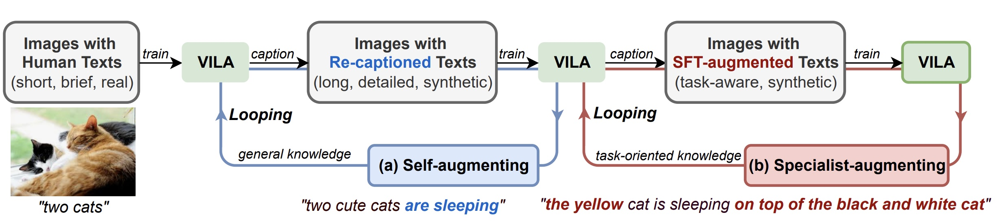

Yunhao Fang 方云浩
 |
Research Scientist Intern, |
About me
I'm a Research Scientist Intern at Nvidia, advised by Dr. Jason Lu and Prof. Song Han, and a core contributor to Nvidia’s multimodal model, VILA.
I hold a Master's degree from the Department of Computer Science and Engineering at the University of California San Diego, where I was fortunate to be advised by Prof. Hao Su. Before that, I earned my B.Eng. in Electronic Engineering from Zhejiang University. I have also spent time at Shanghai AI Laboratory, as the maintainer of the opensource codebase mmtracking.
My long-term research goal is to develop automated learning system that integrate closed-loop data pipelines, efficient algorithms, and robust evaluation tools, advancing the frontiers of multimodal intelligence.
Research interests
My research interests include
Perception
Generalized Representation
Synergy between Understanding and Generation
Reasoning and Common Sense
Concept Emergence and Common Sense
Advanced Reasoning for Scientific Discoveries
Generative Modeling
Efficient World Model
Learning from (Human or AI) Feedback
Selected Publications & Preprints
Papers sorted by years. The full list is available on Google Scholar.
2024
|  | VILA^2: VLM Augmented VLM with Self-Improvement |
2023
 |
Deductive Verification of Chain-of-Thought Reasoning |
 |
Distilling Large Vision-Language Model with Out-of-Distribution Generalizability |
Professional Services
Conference Reviewer: ECCV 2024, ICLR 2024, CVPR 2024
Teaching
Teaching Assistant: CSE 275: Deep Learning for 3D Data at UC San Diego, Fall 2023
Awards
China National Scholarship, 2022